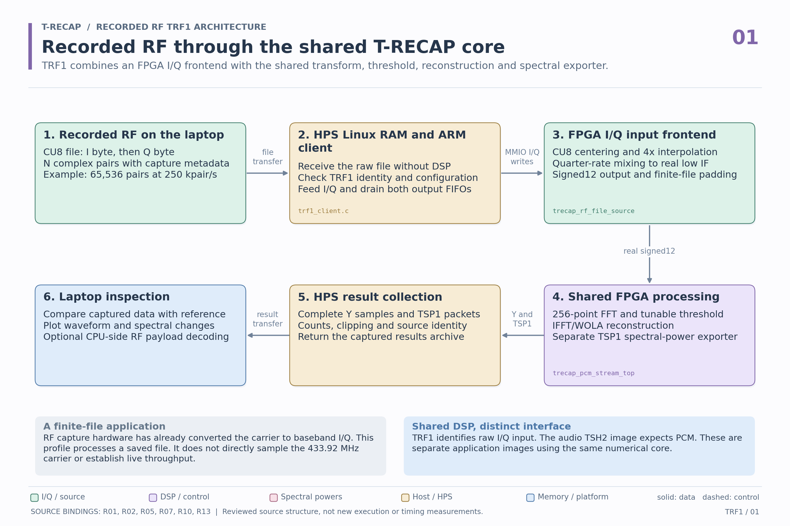
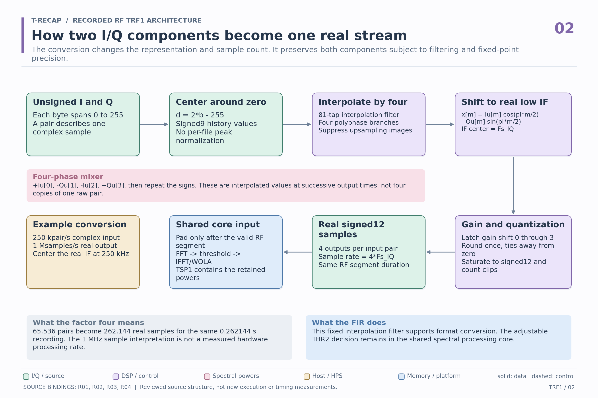
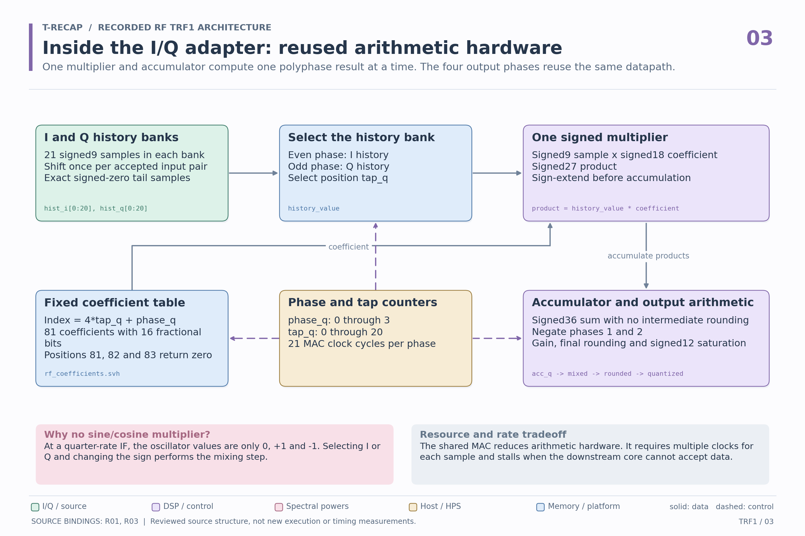
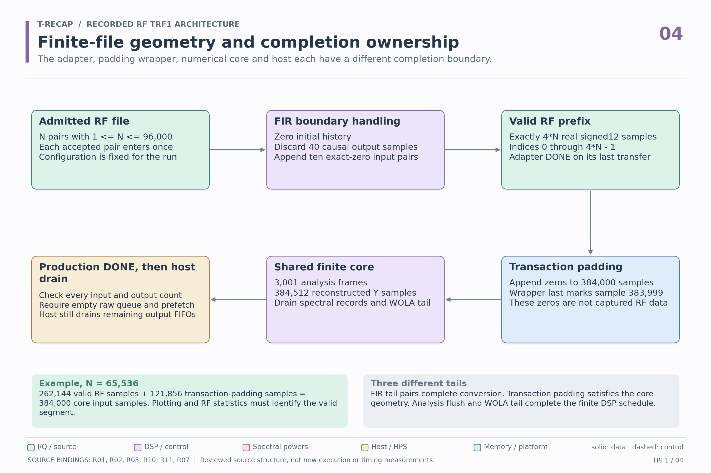
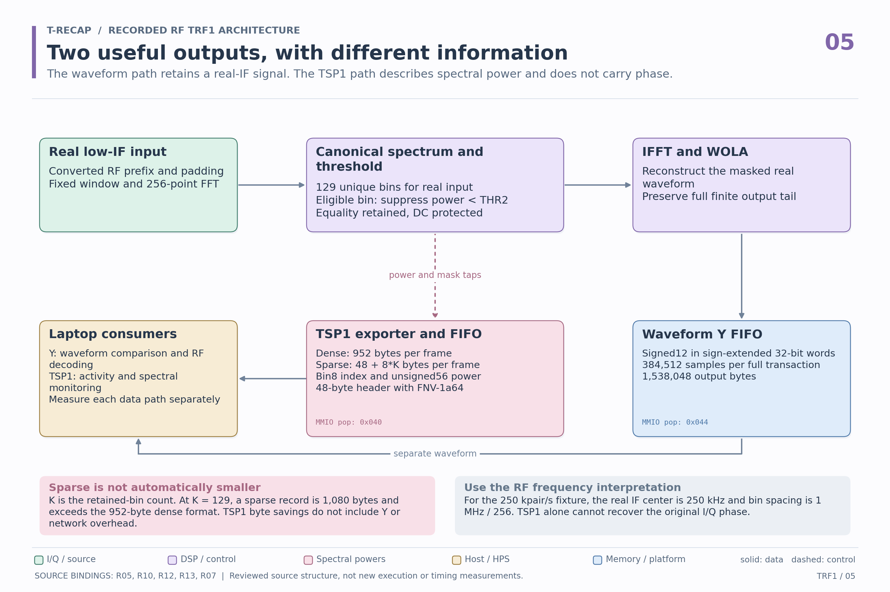
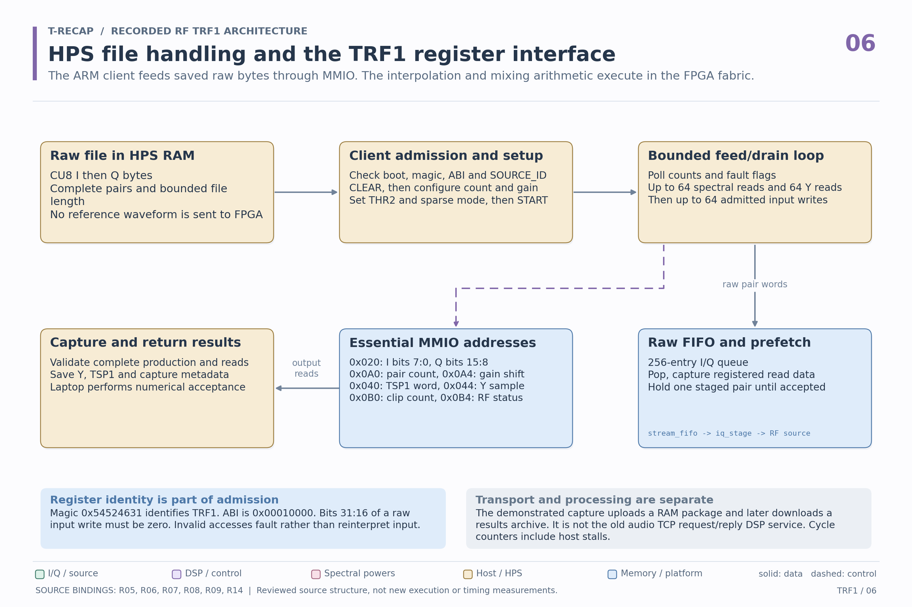
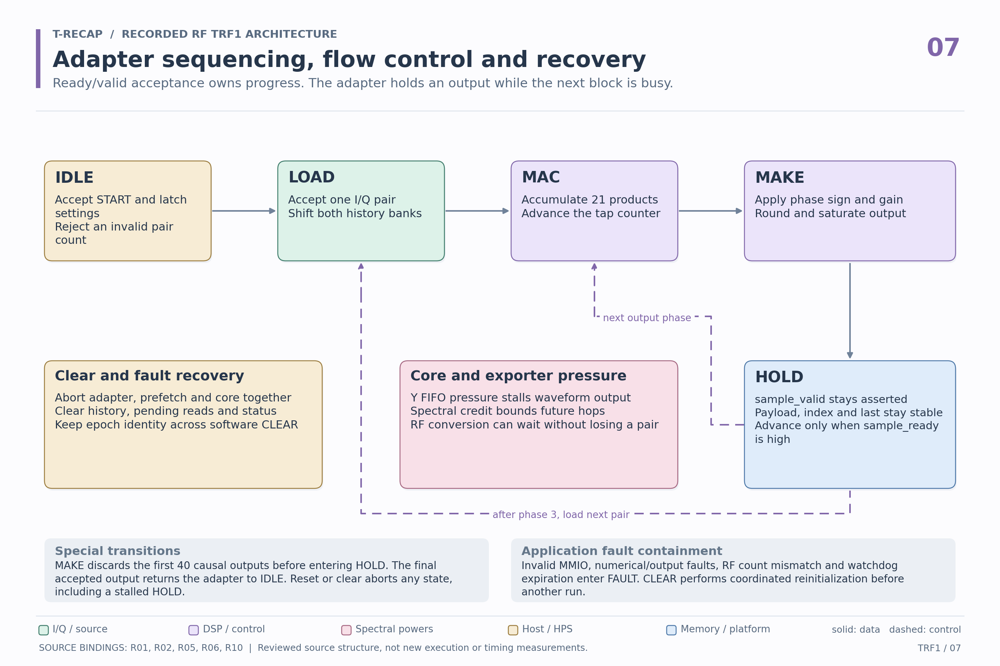
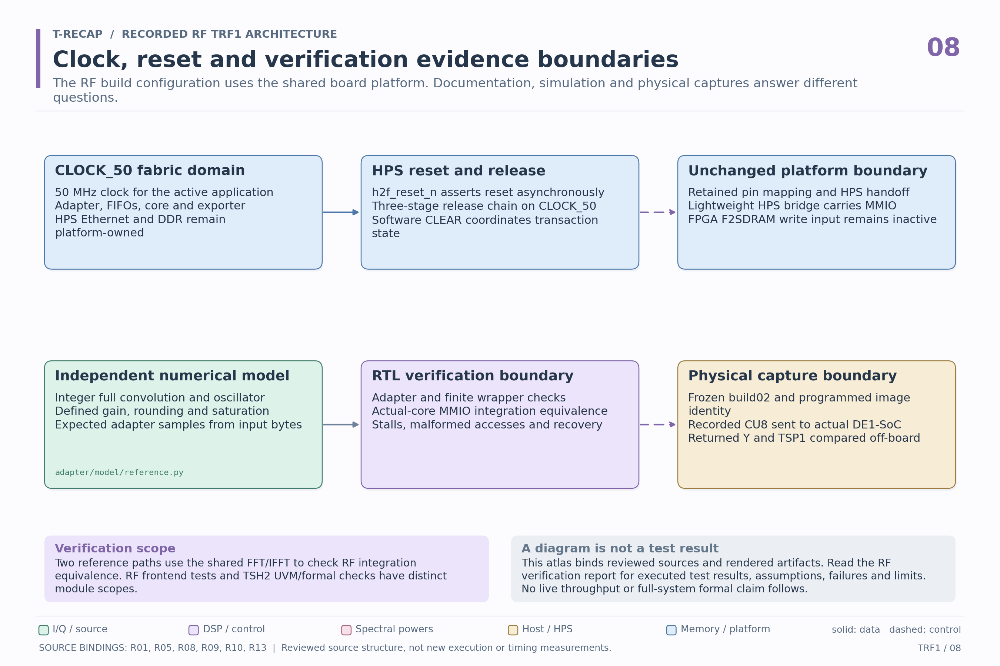

From raw I/Q bytes to
reconstructed signals and sparse spectra.
The FPGA frontend converts recorded I/Q into the real input of the shared T-RECAP core. Inspect its arithmetic hardware and the host control of each finite run.
Recorded RF through the shared T-RECAP core
TRF1 combines an FPGA I/Q frontend with the shared transform, threshold, reconstruction and spectral exporter.


Source bindings: R01, R02, R05, R07, R10, R13. Open the vector to inspect the labels at any zoom level.
How two I/Q components become one real stream
The conversion changes the representation and sample count. It preserves both components subject to filtering and fixed-point precision.


Source bindings: R01, R02, R03, R04. Open the vector to inspect the labels at any zoom level.
Inside the I/Q adapter: reused arithmetic hardware
One multiplier and accumulator compute one polyphase result at a time. The four output phases reuse the same datapath.


Source bindings: R01, R03. Open the vector to inspect the labels at any zoom level.
Finite-file geometry and completion ownership
The adapter, padding wrapper, numerical core and host each have a different completion boundary.


Source bindings: R01, R02, R05, R10, R11, R07. Open the vector to inspect the labels at any zoom level.
Two useful outputs, with different information
The waveform path retains a real-IF signal. The TSP1 path describes spectral power and does not carry phase.


Source bindings: R05, R10, R12, R13, R07. Open the vector to inspect the labels at any zoom level.
HPS file handling and the TRF1 register interface
The ARM client feeds saved raw bytes through MMIO. The interpolation and mixing arithmetic execute in the FPGA fabric.


Source bindings: R05, R06, R07, R08, R09, R14. Open the vector to inspect the labels at any zoom level.
Adapter sequencing, flow control and recovery
Ready/valid acceptance owns progress. The adapter holds an output while the next block is busy.


Source bindings: R01, R02, R05, R06, R10. Open the vector to inspect the labels at any zoom level.
Clock, reset and verification evidence boundaries
The RF build configuration uses the shared board platform. Documentation, simulation and physical captures answer different questions.


Source bindings: R01, R05, R08, R09, R10, R13. Open the vector to inspect the labels at any zoom level.